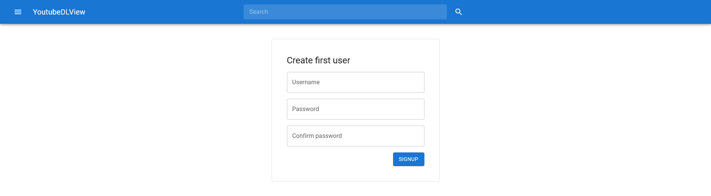
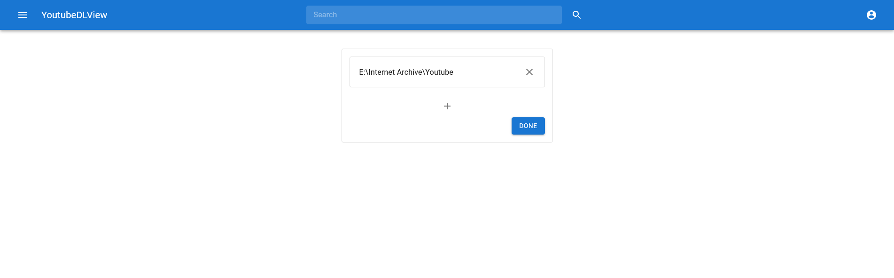
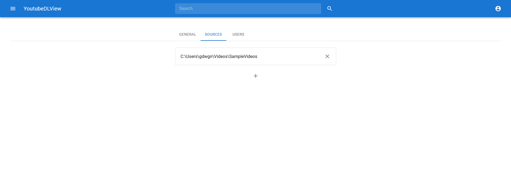

Welcome to the YoutubeDLView user guide
YoutubeDLView is a free and open source library for your archived content from youtube-dl. Below are instructions for installing a using the software.
Installation
To install YoutubeDLView, the .NET 5 runtime must be installed on your computer. Instructions on how to
install it can be found here
After installing the .NET runtime, run the YoutubeDLView installer to install the program. Once the installer
completes you can access the interface from the url http://localhost:5000.
Setup
Once YoutubeDLView is installed, got to http://localhost:5000 in your browser, and you will be redirected to the account creation page, here you can enter a username and password to create the first administrator account for your installation.
Once the account is created, you can add directories on the for server to scan for videos.
Managing users
Users can be managed by administrator accounts in the administration settings section. This can be accessed by clicking the top-right account icon when logged in to an administrator account, and clicking the admin settings button. In this section users can be managed in the Users tab, here users can be created, deleted and edited.
Managing videos
Videos sources can be managed in the administrator settings section, which can accessed as detailed in the managing users section of the guide. In these settings, video sources can be added or removed in the Videos tab.
